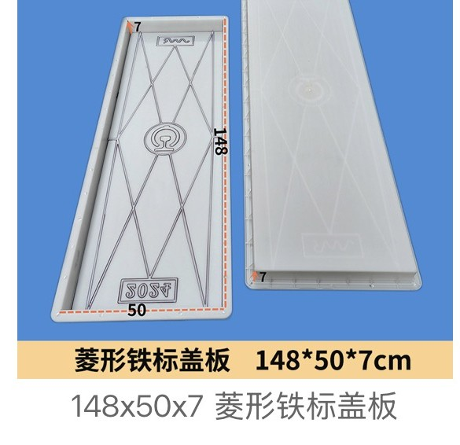
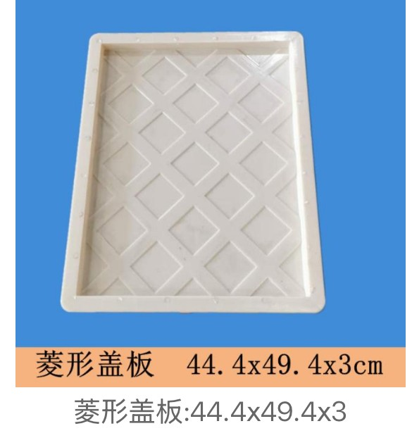
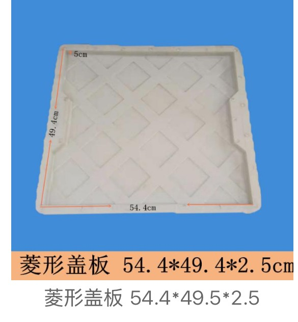
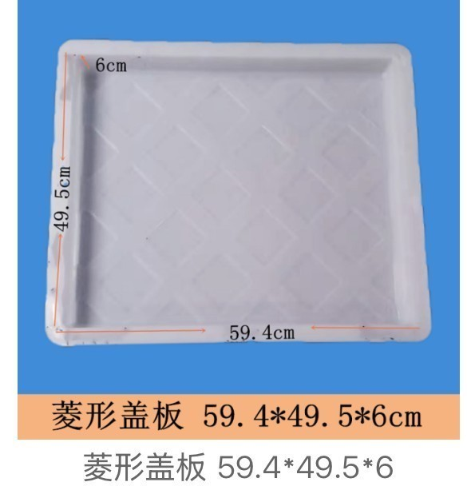
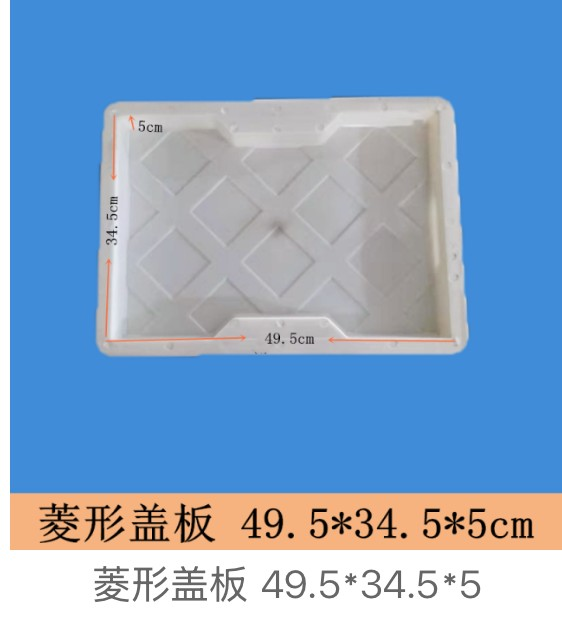
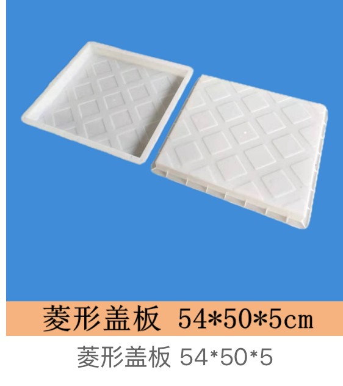
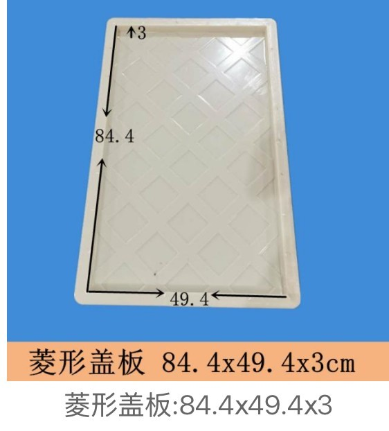
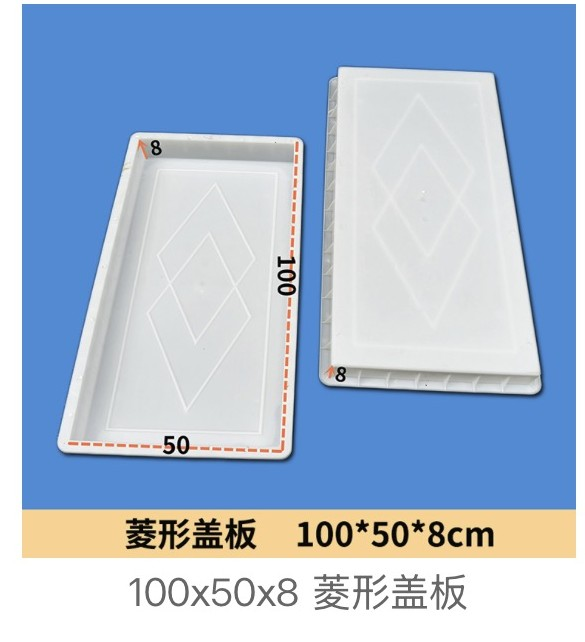
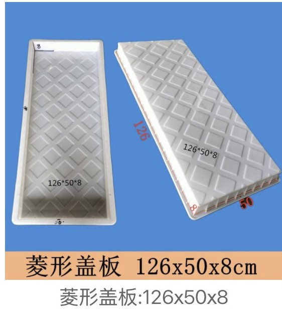

Raised-Rhombus Anti-Slip · Municipal Trenches · Railway Tie Biao 100-148cm
Plastic moulds for precast concrete diamond-pattern (raised rhombus / 菱形纹) trench and cable-cover slabs — an interlocking anti-slip tread for municipal drainage trenches, road shoulders, sidewalks and railway-side walkways. 9 catalogue moulds: standard municipal covers from 44.4×49.4×3 to 84.4×49.4×3 (incl. a narrow 49.5×34.5×5 trench slab), and heavy long-span railway covers — 100×50×8, 126×50×8 and the 148×50×7 diamond Tie Biao (菱形铁标) railway-standard slab.

Raised diamond ribs (菱形纹) form an interlocking anti-slip walking surface on drainage and cable-trench covers — widely specified on municipal roadside and plaza trenches, with heavy long-span versions for railway cable trenches. Below: the standard municipal series (44-84cm, 2.5-6cm) and the heavy railway series (100-148cm, 7-8cm, incl. the diamond Tie Biao slab). Dimensions are length × width × thickness (cm).
Diamond-pattern (raised rhombus 菱形) anti-slip cover moulds for municipal drainage trenches, road shoulders, sidewalks and utility corridors — 2.5-6cm sections, widths 34.5-50cm. The 49.5×34.5×5 narrow slab suits 35cm-class trenches.

Diamond-Pattern Drainage Cover Mould 44.4×49.4×3cm

Diamond-Pattern Drainage Cover Mould 54.4×49.4×2.5cm

Diamond-Pattern Drainage Cover Mould 59.4×49.5×6cm

Diamond-Pattern Drainage Cover Mould 49.5×34.5×5cm (narrow 35cm-class trench)

Diamond-Pattern Drainage Cover Mould 54×50×5cm

Diamond-Pattern Drainage Cover Mould 84.4×49.4×3cm (long 84cm slab)
Thick 7-8cm long-span diamond-pattern slabs for railway and high-speed-rail cable trenches: the 148×50×7 diamond Tie Biao (菱形铁标) railway-standard cover, plus 126×50×8 and 100×50×8 heavy covers. Large thick sections keep the kilometre-long trench walkable and vehicle-edge safe.

Railway Diamond-Pattern Drainage Cover Mould 100×50×8cm
Railway Diamond-Pattern Drainage Cover Mould 148×50×7cm (diamond Tie Biao railway standard)

Railway Diamond-Pattern Drainage Cover Mould 126×50×8cm
Pick the diamond cover by trench class (municipal / sidewalk / railway), then by thickness for the load and PP-or-ABS for the panel size. Tread pattern follows your drawing or authority standard.
| Application | Typical cover | Quote details to prepare |
|---|---|---|
| Municipal roadside / sidewalk trench | 44-59cm diamond covers, 2.5-6cm | L×W×T, walking-surface requirement, PP/ABS |
| Narrow 35cm-class side ditch | 49.5×34.5×5 narrow diamond slab | Trench inner width, seat dimensions, L×W×T |
| Long municipal / plaza run | 84.4×49.4×3 long slab (ABS) | L×W×T, panel layout, ABS confirmed for long panels |
| Railway / HSR cable-trench walkway | 100×50×8 · 126×50×8 · 148×50×7 Tie Biao | Standard number / line code, L×W×T, mark or logo, quantities per km |
| Cable crossing at a cover point | Moulded-notch diamond cover | Notch W×D + middle/end position (never site-cut) |
It is a plastic (PP/ABS) injection mould for a precast concrete trench or ditch cover whose top is formed with a raised diamond / rhombus tread (菱形纹). The diamonds interlock into a continuous anti-slip walking surface that drains grit off the raised edges — a common finish on municipal drainage trenches, road shoulders, sidewalks, cable trenches and railway-side walkways. It is the diamond sibling of dot (stud), striped and cobblestone-pattern covers.
Both are anti-slip treads; the difference is visual and project-standard. Dots (圆点) are round raised studs, the dominant choice on railway tunnel cable trenches (see our HST/Tie Biao dot series). Diamonds (菱形) are interlocking rhombus ribs that read as a continuous directional tread, widely specified on municipal roadside and plaza trenches. Performance is set by slab thickness and reinforcement, not by the tread shape — choose the pattern your drawing or authority standard calls for; we make both from the same PP/ABS tooling.
Standard municipal series (6 moulds): 44.4×49.4×3, 54.4×49.4×2.5, 59.4×49.5×6, 49.5×34.5×5 (narrow 35cm-class trench), 54×50×5 and 84.4×49.4×3 (long 84cm slab). Heavy railway series (3 moulds): 100×50×8, 126×50×8 and the 148×50×7 diamond Tie Biao (菱形铁标) railway-standard cover. Length × width × thickness in cm; any other size is made to drawing.
Tie Biao (铁标) means the cover is made to the Chinese railway industry standard rather than to a single project. The 148×50×7 diamond Tie Biao slab — together with the 100×50×8 and 126×50×8 heavy diamond covers — is a long-span, 7-8cm thick section for railway and high-speed-rail cable-trench walkways that run for kilometres beside the track. Long thick slabs span wide trenches and stay walkable for maintenance crews. We can cast your line code, standard number or project mark in the mould.
No — load comes from slab thickness and concrete reinforcement, not from the tread. In this same diamond range you have 2.5-3cm pedestrian covers (54.4×49.4×2.5, 44.4×49.4×3, 84.4×49.4×3) and 7-8cm railway covers (100×50×8, 126×50×8, 148×50×7). We do not label covers with a D/B load class — that is a property of the reinforced concrete you pour, not of the mould; tell us the application (sidewalk / road shoulder / trackside) and we confirm the section thickness.
Only where the trench demands it. A notch (缺口) is moulded into the edge where a cable or pipe crosses the trench at that cover position — order it with notch width × depth and middle/end position; never cut it on site after casting. Holes are for water-carrying ditches where flow must pass through the slab. The diamond catalogue on this page is solid slabs; for notched or perforated covers see the notched cover range or send your drawing.
Standard municipal diamond covers use PP (polypropylene): 300+ pour cycles, economical for long runs. ABS is chosen for large thin panels and heavy long slabs (the 84cm and 100-148cm pieces) because it holds a flat section without warping and releases the sharper diamond ribs. State PP or ABS, or let us recommend by slab size and thickness.
Catalogue moulds carry no strict MOQ across mixed SKUs; custom project moulds are made to order in roughly 15-30 days after drawing approval. For a quote send the cover L×W×T, the diamond-tread requirement, any notch or holes (size + position), the load/application, the project mark or standard number (e.g. Tie Biao), PP or ABS, quantities and destination port — FOB Ningbo/Shanghai. Fastest way: WhatsApp a photo of the cover you want to match and we confirm the nearest catalogue size or quote an OEM mould.